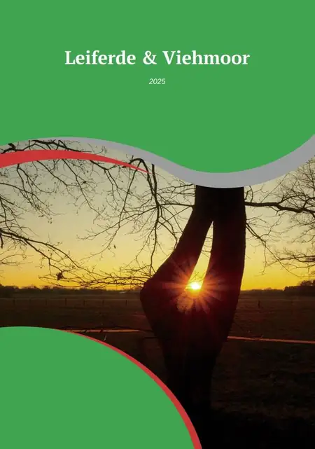
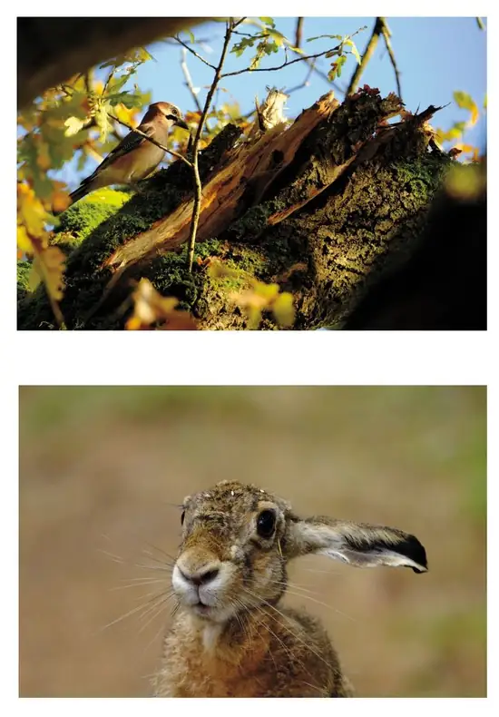
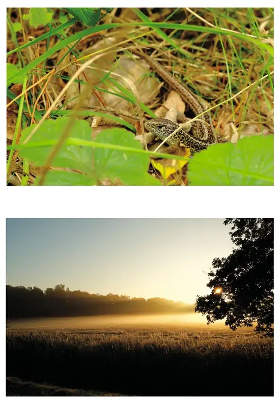

Arbeiten
Fotografien werden zu gedruckten Publikationen und ausgewählten Bildobjekten. Hier findest du Einblicke in meine Zines, Kalender, gerahmten Fotografien und das Fotobuch.

Leiferde und das Viehmoor 2025
Eine fotografische Publikation von Felix Wach. Die erste Ausgabe verbindet ausgewählte Naturaufnahmen aus Leiferde und dem Viehmoor in einem gedruckten Format.
DIN A5 · 32 Seiten · Klammerheftung


Kalender
Fotokalender mit ausgewählten Naturmotiven – gestaltet in Hoch- und Querformat.
Gerahmte Fotografien
Ausgewählte Motive als Fine-Art-Prints, gedruckt und gerahmt. Unterschiedliche Formate und Rahmungen zeigen, wie die Fotografien als eigenständige Bildobjekte wirken.
Fotobuch – Natur vor der Tür
Eine persönliche fotografische Zusammenstellung auf rund 50 Seiten. Das Fotobuch ist nicht für den Verkauf vorgesehen, sondern gibt einen vertieften Einblick in meine Bildsprache und die Themen meiner Fotografie.